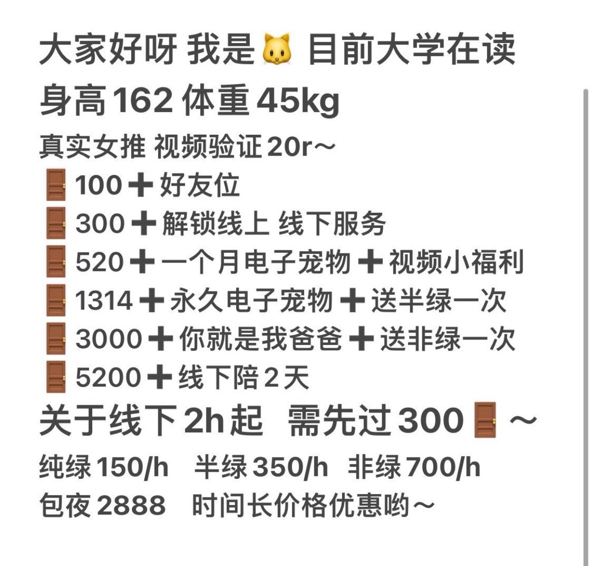

Sakura
@Ancde_1118
RT @30mo8b: 大家好 我是个在校学生
因生活费不够因此来做门槛妹。我会用你们给我的钱买好吃的 入我门槛的我会好好对待你的🥹
#杭州 #jk #萝莉 #爸爸活 #江浙沪 #门槛妹 #门槛姐 #线下

🐱3.0
@30mo8b
大家好 我是个在校学生
因生活费不够因此来做门槛妹。我会用你们给我的钱买好吃的 入我门槛的我会好好对待你的🥹
#杭州 #jk #萝莉 #爸爸活 #江浙沪 #门槛妹 #门槛姐 #线下 https://t.co/yC2VfqSIIs